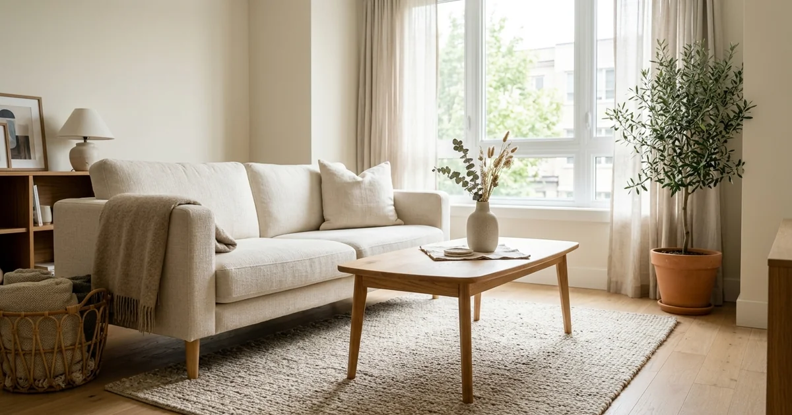

6 Best Space-Saving Coffee Tables & Compact Alternatives for Small Living Rooms (2026)
🕒 Editorial Review Draft • Stage 3.2 Evidence-Audited Research
When your living room doubles as an office, dining area, and main walking route, table depth dictates your usable space. We evaluated narrow silhouettes under 18 inches, modular nesting pairs, slide-over C-frames, and multifunctional lift-tops to help you compare compact options using documented specifications and verified spatial guidelines.
Disclosure: As an Amazon Associate, ElevateLivingCo earns from qualifying purchases at no additional cost to you. Our product recommendations are strictly based on manufacturer specifications, dimensional clearances, and verified functional attributes.

Furnishing a compact living room requires careful attention to furniture depth. A common challenge in smaller floor plans is accommodating standard 24- to 30-inch deep coffee tables. When placed in a narrow living room, deeper tables often restrict the clearance between the couch cushions and opposite walls, making everyday movement around the room awkward.
Rather than foregoing a central surface altogether, the solution lies in matching the depth, configuration, and footprint category of your table to your room's actual layout. If you need a traditional center table, an ultra-slim linear design under 18 inches deep helps preserve floor space. If your seating area is too tight for any centered piece, a slide-over C-table places a beverage or laptop within arm's reach while sliding its base beneath the couch frame. For flexible entertaining or dual dining needs, nesting sets and lift-top desks offer modular utility. Because dimensions vary widely across apartments, measuring your own furniture and room clearances is essential before choosing a piece.
Every table below has been evaluated against documented manufacturer specifications, product manuals, or verified retailer data. Review depth, weight, and verified weight limits carefully: certain models are intended strictly for light personal items like a book or cup, while others support heavier daily utility.
Small-Space Measurement Guide: Reach vs. Walking Clearances
Before selecting any furniture, measuring your space is critical. Standard interior design planning relies on two distinct clearance guidelines documented in foundational design literature:
Standard Living Room Clearance Planning Guidelines
Note: The following measurements are common residential planning recommendations derived from interior design literature. They are general planning rules of thumb, not municipal building codes or legal ADA accessibility requirements. Always measure your specific room, sofa cushion depth, and walkway paths.
14 to 18 Inches
The Sofa-to-Table Reach Gap
Reference Point: Measured from the outermost front edge of the sofa seat cushion to the nearest perimeter edge of the coffee table. As documented in human factors references like Julius Panero and Martin Zelnik's Human Dimension and Interior Space (Whitney Library of Design), this 14-to-18-inch (35 to 45 cm) span allows a seated person to reach a beverage or book without straining posture, while providing adequate knee room for sitting and standing.
30 to 36 Inches
The Main Walking-Route Corridor
Reference Point: Measured from the opposite perimeter edge of the coffee table to opposing architectural fixtures (such as a media console or opposite wall). Standard space-planning texts such as Joseph De Chiara et al.'s Time-Saver Standards for Interior Design and Space Planning recommend a 30- to 36-inch (76 to 91 cm) corridor for primary residential pathways so that individuals can pass through without turning sideways.
How much walking clearance remains depends entirely on your room's width and the depth of your existing sofa. For example, if your sofa measures 34 inches deep and you maintain a 16-inch reach gap, those two elements occupy 50 inches of floor depth. Choosing a narrower coffee table (such as 15 to 17 inches) leaves more open space than a conventional 24- to 30-inch model, but you must calculate your own room's dimensions to confirm whether your layout provides sufficient walkway width.
A common interior-design rule of thumb is to choose a coffee table approximately one-half to two-thirds the length of your sofa. Treat this as a starting point, then adjust for the room layout, seating arrangement, and walking clearance. This one-half to two-thirds proportion is recommended in Ethan Allen's occasional table buying guide, with The Spruce providing additional context supporting an approximate two-thirds proportion alongside the recommendation that a coffee table's surface should align with or sit one to two inches lower than your sofa seat cushions.
Section A: Ultra-Slim Center Coffee Tables (Under 18" Depth)
These three tables meet our under-18-inch depth benchmark, offering linear profiles that reduce central floor encroachment in narrow living areas.
Best Ultra-Slim Linear
Ultra-Slim Center Table • Class C Evidence
HOOBRO Narrow Oval 2-Tier Coffee Table (BF09KF01)
📷 Asset Placeholder [Asset 2 of 7 — Unmounted]
Product: HOOBRO BF09KF01 (ASIN B0F3J6PW1C).
Finish: Rustic Brown Engineered Wood / Black Metal Frame.
Configuration: 2-Tier with Lower Metal Mesh Shelf.
Aspect: 1:1 Square (600 × 600 px).
Status: Unmounted placeholder. Image metadata reference is omitted until deployed.
Length (Retailer-Reported)
35.4 in
Depth (Retailer-Reported)
15.7 in
Height (Retailer-Reported)
17.3 in
Item Weight (Reported)
15.4 lb
Best for: Narrow living rooms where a centered linear table is preferred without occupying excessive floor depth.
What it is: A two-tier linear table featuring a particleboard top with a rustic wood-look foil finish, supported by a metal frame and a lower metal mesh shelf. Note that dimensions and weight are retailer-reported (Class C evidence), and no official manufacturer manual has been located to verify structural load ratings.
Key Features:
15.7-inch slim depth: Measures narrower than standard 24-inch coffee tables, reducing physical intrusion into the central room area.
Lower metal mesh shelf: Provides a secondary tier for storage baskets, remotes, or reading materials, keeping the top surface less cluttered.
Oval contouring: Rounded end curves avoid 90-degree outer points along the perimeter.
Advantages
15.7" depth preserves more central floor area than standard coffee tables.
Lower shelf provides dedicated space for small storage baskets.
Reported weight of 15.4 lb makes repositioning relatively simple.
Important Limitations
Load limits unverified: Manufacturer-verified load ratings are not publicly documented in official manuals. Retail claims of 88 lb top and 44 lb shelf capacity remain unconfirmed. Do not assume heavy objects or climbing are supported.
Foil-laminate surface requires coasters to guard against moisture rings.
Skip it if: You need a table with verified load testing or intend to support heavy storage crates or climbing toddlers.
Recommendation: A practical choice for apartment dwellers who want a linear center table with a narrow profile. Because manufacturer load documentation is unavailable, avoid placing heavy equipment on the tabletop.
VASAGLE 2-Piece Rectangular Nesting Coffee Table Set (LNT012B01)
📷 Asset Placeholder [Asset 3 of 7 — Unmounted]
Product: VASAGLE LNT012B01 (ASIN B0894RC14J).
Finish: Rustic Brown Engineered Wood / Black Steel Frame.
Configuration: 2 Nesting Tables (Large + Small).
Aspect: 1:1 Square (600 × 600 px).
Status: Unmounted placeholder. Image metadata reference is omitted until deployed.
Large Table (Class A)
23.6 × 15.0 × 18.7 in
Small Table (Class A)
20.5 × 12.4 × 16.7 in
Combined Weight (Class A)
12.6 lb
Static Load Capacity (Class B)
11 lb / table (Mfr Manual)
Best for: Multi-use living areas where you want a compact footprint during daily routines and an additional surface when entertaining.
What it is: A pair of rectangular tables sized so the smaller unit slides under the larger table. Documented by VASAGLE's official B2B specification page, the primary table measures 23.6 by 15.0 inches, defining the nested footprint envelope.
Key Features:
Full nesting design: When nested, the pair occupies the floor footprint of the larger table (23.6 × 15.0 inches).
Modular separation: The smaller table can be pulled out and positioned as a temporary perch beside another seat.
15.0-inch depth profile: Complies with narrow room depth preferences when stacked.
Advantages
Modular versatility: provides two usable surfaces from one nested footprint.
Combined weight of 12.6 lb makes moving the tables simple.
Slim 15.0" depth fits well in narrow room arrangements.
Important Limitations
Strict 11 lb static load limit per table: The manufacturer manual explicitly rates maximum static load at 5 kg (11 lb) per tabletop.
Not designed to support heavy decor items, stacks of heavy books, foot resting, or body weight.
Skip it if: You intend to use your coffee table as a footrest or need to hold heavy electronics or dense decorative objects.
Recommendation: A flexible choice for users who want optional extra surface area without permanent floor clutter. Adhere strictly to the manufacturer's 11 lb static load rating by restricting use to lightweight items like a single light laptop, a cup, or a TV remote.
Best for: Compact living rooms where opaque, solid furniture creates an impression of visual clutter.
What it is: A molded acrylic table featuring curved waterfall edges and transparent material that preserves sightlines to the rug beneath. Dimensions, weight, and the 33 lb weight capacity are verified directly from Safavieh's official product documentation.
Key Features:
Optical transparency: Because light passes through clear acrylic, the table preserves visual continuity across your rug and flooring.
17.72-inch depth: Fits within our under-18-inch benchmark while providing a 35.4-inch length.
Molded acrylic form: Features continuous curved waterfall ends without frame assemblies.
Advantages
Transparent construction reduces visual density in tight layouts.
Allows rug patterns and wood flooring to remain visible.
Molded piece requires no assembly.
Important Limitations
33 lb official weight limit: Verified by manufacturer documentation; not intended for heavy loads or seating.
Prone to micro-scratches: Acrylic is an optical thermoplastic softer than glass and is NOT scratch-proof. It scratches from coarse dust, rough pottery, or abrasive cloths.
13.8" height is lower than standard 17- to 19-inch sofa cushions.
Skip it if: You have household pets with untrimmed claws, rough daily use, or prefer low-maintenance surfaces that do not require dedicated acrylic care.
Recommendation: An attractive optical choice for small apartments with good natural lighting. Use felt pads beneath all decorative objects and clean exclusively with a clean, plush microfiber cloth slightly dampened with lukewarm water or specialized acrylic cleaner.
When a living room is so narrow that placing any center table restricts walking clearance, a slide-over C-table offers an alternative by cantilevering the table surface directly over your sofa.
Slide-Over Alternative
Slide-Over Side Table (Not Center Coffee Table) • Class B Evidence
VASAGLE C-Shaped Side Table with Built-In Power Strip (LET355)
📷 Asset Placeholder [Asset 5 of 7 — Unmounted]
Product: VASAGLE LET355 (ASIN B0D53N4RPX).
Finish: Rustic Brown Top / Matte Black Steel C-Frame.
Feature: Integrated Power Outlet Hub (2 AC + 2 USB-A).
Aspect: 1:1 Square (600 × 600 px).
Status: Unmounted placeholder. Image metadata reference is omitted until deployed.
Width (Class B)
15.7 in
Depth (Class B)
11.8 in
Height (Class B)
24.4 in
Item Weight (Class B)
8.6 lb
Max Static Load Capacity (Class B)
22 lb (10 kg) • Mfr Assembly Manual
Best for: Narrow living rooms or compact seating areas where placing a center coffee table would obstruct the walking lane between sofa and television.
What it is: A cantilevered C-shaped side table—not a conventional center coffee table—designed with a top that extends over the sofa cushion and a steel base that rests directly on the floor.
Clearance & Placement Requirements: The table's steel base rests directly on your floor; it does not eliminate floor contact. To slide over your couch seat, your sofa must have at least 1.2 inches of vertical clearance between the floor and the bottom of the sofa frame so the base rails can slide underneath. Additionally, because sofa armrest heights vary significantly, measure your couch cushion and armrest height to confirm whether the 24.4-inch table height will comfortably clear them.
Key Features:
Over-sofa reach: The 15.7-by-11.8-inch top surface cantilevers over the seat cushion, positioning your laptop or beverage within arm's reach.
Integrated power outlet hub: Houses two 120V AC outlets and two USB-A ports on a 6.5-foot power cord.
24.4-inch height: Elevated profile designed to clear many standard sofa cushions.
Advantages
Brings work or drink surface directly to the seated person.
Avoids placing furniture in the middle of a narrow room.
Side-table configuration: Intended for individual use, not as a shared center surface for multiple people.
Under-sofa frame clearance required: Will not slide beneath sofas with platform bases, low rails under 1.2 inches, or skirted hems.
22 lb static capacity: cantilevered design is not meant for heavy downward leverage.
Skip it if: Your sofa frame sits flush to the floor without at least 1.2 inches of clearance, or you require a shared central table for several guests.
Recommendation: A functional alternative for tight living areas where central floor space is constrained. Verify your sofa's under-frame clearance and cushion height before ordering.
Not every small living room requires an ultra-narrow rectangular slab. When layout geometry allows for a slightly deeper footprint in exchange for circular forms or multi-functional work/dining utility, these two models serve as documented exceptions.
Round Footprint Exception
Footprint Exception: 23.6" Diameter • Class C Evidence
Smuxee 2-Piece Round Nesting Coffee Table Set (B09W4SGYMC)
📷 Asset Placeholder [Asset 6 of 7 — Unmounted]
Product: Smuxee Round Nesting Set (ASIN B09W4SGYMC).
Finish: Faux Marble Top / Black Metal Drum Frame.
Configuration: 2 Circular Nesting Tables.
Aspect: 1:1 Square (600 × 600 px).
Status: Unmounted placeholder. Image metadata reference is omitted until deployed.
Large Table (Retailer-Reported)
23.6" Dia × 17.7" H
Small Table (Retailer-Reported)
15.7" Dia × 15.7" H
Combined Weight (Reported)
15.4 lb
Load Capacity
Unverified (Retail ~15.4 lb/table)
Best for: Compact living rooms where users prefer a circular profile and have sufficient space to accommodate a 23.6-inch diameter.
What it is: A pair of round accent tables featuring engineered faux-marble tops over black metal frames. Specifications are retailer-reported (Class C evidence), and no official manufacturer engineering manual is available to verify load limits.
Footprint Disclosure: The larger table has a 23.6-inch diameter, which exceeds our 18-inch depth benchmark. It is included as a footprint exception because its circular geometry lacks 90-degree corners. Note that while circular shapes taper at the sides, the square bounding area on your floor remains 23.6 by 23.6 inches. We make no claims of proven traffic-flow improvement or safety performance.
Key Features:
Circular perimeter: Lacks angular 90-degree outer corners along walking pathways.
Concentric nesting: The smaller 15.7-inch table slides semi-concentrically underneath when not in active use.
Modular accent: Smaller table can be pulled out as an extra surface during gatherings.
Advantages
Circular design avoids 90-degree corners.
Nesting configuration provides an optional second surface.
📷 Asset Placeholder [Asset 7 of 7 — Unmounted]
Product: WLIVE ACJ009PL (ASIN B084ZH1LYN).
Finish: Charcoal Black / Distressed Oak Wood Grain.
Mechanism: Steel Spring/Gas Scissor Lift-Top.
Aspect: 1:1 Square (600 × 600 px).
Status: Unmounted placeholder. Image metadata reference is omitted until deployed.
Width (Class B)
39.4 in
Depth (Class B)
19.7 in
Closed Height (Class B)
16.9 in
Raised Height (Class B)
23.2 in
Net Weight (Class B)
41.8 lb
Closed Tabletop Load
200 lb • Class B Manual
Best for: Apartments lacking space for a separate dining table or dedicated desk, provided the living room has sufficient depth to accommodate its dimensions.
What it is: A heavier multifunctional coffee table featuring an internal mechanical lift mechanism that raises the front surface upward to 23.2 inches.
Footprint & Weight Disclosure: At 19.7 inches deep and 41.8 pounds, this table exceeds our 18-inch benchmark. It is included as a functional exception because it can double as a dining or laptop surface, potentially replacing a separate desk. Note: We cite its 19.7-inch depth purely as a published dimension and make no unverified claims regarding counterbalance safety physics.
Key Features:
Elevated work/dining surface: The tabletop raises to 23.2 inches, positioning it closer to sofa height for dining or typing.
Concealed interior storage: Lifting the top provides access to an interior compartment for electronics, remotes, and board games.
200 lb closed tabletop rating: The manufacturer manual confirms a 200 lb static limit when closed. (Raised-top and interior-bay capacities are not documented in official manuals and remain unverified).
Advantages
Can serve as both coffee table and casual desk or dining surface.
Interior storage bay helps conceal everyday clutter.
Substantial build with verified 200 lb closed load rating.
Important Limitations
19.7" depth: Occupies more central floor space than slim linear models.
41.8 lb weight makes moving the table less convenient.
Raised-top capacity (retail 22 lb) and interior bay capacity (retail 44 lb) are not verified in official manuals.
Skip it if: Your room is narrow and cannot accommodate a 19.7-inch deep table plus the required sofa reach gap and walkway corridor.
Recommendation: If you need a multi-functional hybrid piece and have verified that your floor plan has adequate space for both the table and its raised extension, the WLIVE lift-top offers solid versatility.
ElevateLivingCo maintains strict evidence-tier transparency. Every product specification cited in this review is classified according to source verification standards:
Raised-top capacity (retail 22 lb) and interior bay capacity (retail 44 lb) unverified
Editorial Methodology: How We Evaluated These Tables
Our recommendations are developed through structured dimensional analysis, examination of published manufacturer assembly manuals, and spatial geometry. We do not claim hands-on ownership, long-term stress testing, or laboratory trials. Instead, our research focuses on:
Physical Dimension Verification: Auditing length, depth, height, and weight against manufacturer documentation or retailer data to ensure accurate categorization.
Load-Capacity Evidence Tiers: Distinguishing between official manufacturer-documented capacities (such as the Safavieh 33 lb limit and VASAGLE 11 lb manual rating) and unverified retailer marketing claims.
Clearance Feasibility: Evaluating how each piece behaves relative to standard 14- to 18-inch reach gaps and 30- to 36-inch walkway guidelines.
Practical Buying Guide: Measuring for Your Layout
Selecting an appropriate table comes down to understanding dimensions and measuring your room accurately:
1. Distinguishing Depth, Width, Height, and Diameter
Product listings frequently interchange terminology. Here is how to evaluate dimensions:
Depth: The measurement between the couch front and opposing furniture. In narrow rooms, keeping depth under 18 inches helps retain walkway space.
Length (or Width along sofa): The lateral dimension running parallel to the sofa. A common interior-design rule of thumb is to choose a coffee table approximately one-half to two-thirds the length of your sofa. Treat this as a starting point, then adjust for the room layout, seating arrangement, and walking clearance.
Height: The vertical distance from floor to top surface. Center coffee tables typically align closely with your sofa's seat cushion height or sit one to two inches lower for comfortable reach. In contrast, slide-over C-tables require sufficient vertical clearance to slide comfortably over your sofa frame and seat cushion.
Diameter: The widest point across a round table. Note that a 24-inch round table claims 24 inches of depth at its center axis.
2. Choosing the Right Category for Your Space
If your layout allows for a centered piece and you want an unobstructed walkway, an ultra-slim linear table like the HOOBRO BF09KF01 (15.7" depth) or Safavieh Atka (17.7" depth) provides a stationary surface.
If you need modular surface flexibility for guests, nesting sets like the VASAGLE LNT012B01 offer an expandable secondary surface while maintaining a single footprint when nested.
If placing any table in the center of the room obstructs your walking lane, the VASAGLE LET355 C-table brings surface space directly over the couch while resting its base along the sofa perimeter.
Material Care & Practical Limitations
Understanding material properties helps prolong the life of compact furniture:
Clear Acrylic (Safavieh): Acrylic is an optical plastic prone to fine scratches. Clean it exclusively with a clean, plush microfiber towel dampened with lukewarm water or a dedicated acrylic cleaner. Never use paper towels, dry cloths, abrasive sponges, ammonia glass sprays, or alcohol, which cause micro-abrasions and hazing. Use felt pads under coasters and trays.
Engineered Wood with Foil Veneer (HOOBRO, VASAGLE, WLIVE): Particleboard surfaces resist light spills if wiped promptly, but standing liquids can penetrate edge seams and cause swelling. Always use absorbent coasters.
Steel Frames & Fasteners: Regularly inspect and tighten hex screws on nesting sets and C-tables, as regular movement across rugs can loosen hardware over time.
Frequently Asked Questions
For compact living rooms, selecting a coffee table depth between 11 and 18 inches helps retain usable circulation space. Standard interior design planning suggests maintaining a 14- to 18-inch reach gap between the sofa seat cushion and the table edge, alongside a 30- to 36-inch continuous corridor for comfortable room passage. Because room dimensions and seating depths vary, you must measure your specific room width, sofa cushion depth, and existing pathways before purchasing.
Yes, a slide-over C-table can serve as an effective alternative in compact seating areas where a center table would crowd the walking lane. Its tabletop cantilevers over the sofa seat cushion, while its steel base rests directly on the floor and slides beneath the sofa frame. Note that the table does not eliminate floor contact, as its base occupies floor space under or beside the couch. Your sofa frame must have at least 1.2 inches of vertical clearance between the bottom rail and the floor for the base to slide beneath it.
Nesting tables offer modular surface area on demand. During daily routines, the smaller table slides underneath the larger primary table, occupying a single compact footprint. When extra surface is required, you can pull the smaller table out to create an extended bi-level surface or place it beside an accent chair.
Weight capacities depend strictly on materials and manufacturer engineering. Molded acrylic tables like the Safavieh Atka are officially rated for up to 33 pounds per the manufacturer specification sheet, while modular steel-frame nesting tables like the VASAGLE LNT012B01 have a manufacturer-specified maximum static load of 11 pounds per table. These pieces are designed for lightweight personal items like a laptop, a cup, or a book, not for heavy storage containers, footrests, or seated weight.
A lift-top coffee table makes sense when your living room must double as a dining area or work desk, and your room has enough depth to accommodate its larger footprint. Units like the WLIVE ACJ009PL measure 19.7 inches deep and weigh 41.8 pounds. They provide a 2-in-1 hybrid surface and hidden storage, but they consume more central floor space than slim tables, so you must confirm your available floor depth before choosing one.
Clean clear acrylic exclusively using a clean, plush microfiber cloth slightly dampened with lukewarm water or a specialized plastic/acrylic cleaner. Never wipe acrylic with dry rags, paper towels, scouring sponges, ammonia-based glass sprays, or alcohol, as these cause permanent micro-scratches and surface clouding. Always place soft felt pads under decorative trays and ceramic coasters.
Final Recommendations: Matching Tables to Layouts
To determine the most appropriate option for your space, consider your primary layout constraint:
For a narrow linear layout needing a stationary center table: The HOOBRO BF09KF01 offers a 15.7-inch depth and a lower storage shelf for light items.
For modular surface flexibility when entertaining: The VASAGLE LNT012B01 Nesting Set provides two tables that stack into a 15.0-inch depth (respecting the 11 lb load limit).
For reducing visual density in smaller rooms: The Safavieh Atka Clear Acrylic Table maintains open sightlines with verified 33 lb capacity.
When central floor space cannot accommodate a table: The VASAGLE LET355 C-Table cantilevers over the couch cushion, provided your sofa has 1.2" of base clearance.
For square rooms where circular styling is preferred: The Smuxee 2-Piece Round Nesting Set offers rounded contours, provided you have space for its 23.6-inch diameter.
When your table must function as a dining or desk surface: The WLIVE ACJ009PL Lift-Top justifies its 19.7-inch depth if your room has enough clearance to support it.
Explore More Small-Space Guides on ElevateLivingCo
Small Living Room Decor Ideas
Discover 12 practical techniques to optimize space, improve furniture arrangements, and style small apartments.
Our editorial team analyzes published product specifications, physical dimensions, and manufacturer manuals to help apartment dwellers compare compact furniture options. Recommendations are based on dimensional analysis and published specifications without claiming hands-on laboratory testing or bespoke architectural accreditation.